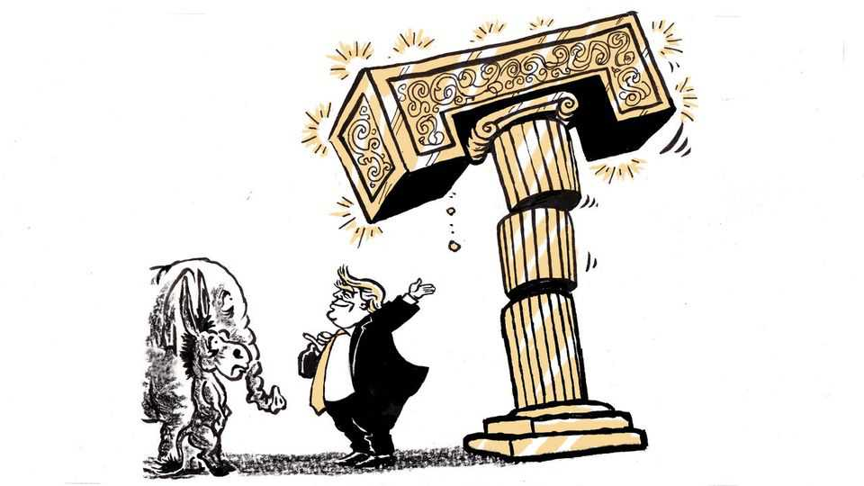

Donald Trump has an unusual chance to make progress
He also has an unusual gift for blowing such chances

Nov 12th 2026
Not long ago, after a whopping defeat in midterm elections, the president made some conciliatory noises and some belligerent ones. He issued a warning to the opposition party that was taking control of the House. “You can’t legislate and investigate simultaneously—it just doesn’t work that way,” he said. “You can’t go down two tracks at the same time.” Yet when they did go down both tracks, he did, too, battling congressional investigations while collaborating with his congressional adversaries to achieve legislation on trade and the environment. When crisis struck he worked with the House to deliver an historic economic rescue package—even though by then, in a party-line vote, the opposition had impeached him.
That president was, of course, Donald Trump, in his first term. This time around, after an even bigger midterm rebuke, he is sending more intensely mixed signals. He has floated the idea of working with Democrats to solve one of America’s most vexing problems, its broken immigration system. Yet he has appointed as his chief of staff Stephen Miller, the enforcer of his brutal deportation agenda, whom Democrats despise and even some Republican legislators consider too hardline. Given the priorities of the Democrats, particularly those elected from what were Republican states and districts, Mr Trump has a bigger opportunity than in his first term to make progress, including for the working-class voters he has always claimed to represent. One can hope. But the historical pattern, and this president’s particular pattern, suggest he won’t.
Freed from facing voters again, intent on a legacy and looking to history for vindication, second-term presidents tend not to retreat from signature positions after midterm reversals, notes Frances Lee, a professor at Princeton. “They tend to take a hard line and persist,” she says. President George W. Bush sent more troops to Iraq despite Americans’ despair over that war; President Barack Obama outraged Republicans by using executive orders to protect some immigrants in the country illegally. Mr Trump has taken to brandishing a red hat emblazoned with the word “veto”, a familiar threat in his circumstances. In the first five and a half years of his presidency, Mr Bush issued not a single veto, a record surpassed only by Thomas Jefferson. After the crushing Democratic victory in 2006, he vetoed 11 bills, edging out Mr Obama, who, after his midterm drubbing in 2014, vetoed ten.
Presidents Bush and Obama achieved some legislative compromises. Yet unlike those two predecessors—and unlike any president in memory—Mr Trump has made conflict core to his political appeal. Having been dismissed after the midterms as seeming “more like a bitchy old woman than an alpha male” by Tucker Carlson, a vodcaster, Mr Trump may see restoring his image as a fighter as his best path to consolidating Republican support. He knows there is nothing like an impeachment to accomplish this. “There are those that say that worked out to my advantage,” he volunteered after the midterms, referring to his two impeachments in an interview on “60 Minutes” on CBS.
The desire to be seen by his base as a fighter may explain his refusal to eject his cartoonish secretary of war, Pete Hegseth, as, after the midterms of 2006, Mr Bush forced Donald Rumsfeld out. Mr Trump also faces an obstacle Mr Bush did not. The shambolic Trump administrations have so damaged the reputations of most who have joined that this president is unlikely to attract any appointee with the standing of Bob Gates, a former CIA chief who was confirmed with bipartisan support to replace Mr Rumsfeld.
Base politics and incompetence would probably also doom a foray into immigration reform. Mr Trump has never summoned the discipline to deliver on complex initiatives he promised, from rebuilding America’s infrastructure to fixing its health-care system to streamlining its bureaucracy. He has also always prioritised the loyalty of his most hard-core followers, relying on their support, particularly during primaries, to intimidate other Republican officials. His suggestion he might work with Democrats on immigration brought immediate howls of protest from MAGA stalwarts, furious at the prospect of “amnesty”.
There is one further possibility for progress, which sets Mr Trump apart from his presidential predecessors: on issues that appeal to his base, but not to traditional members of his own party, his idiosyncratic politics gives him a chance to work with the opposition. He has, in the past, signalled openness to such Democratic proposals as raising the minimum wage or capping interest rates on credit cards. However, the nature of this opportunity brings its own obstacles. Such ideas divide leaders of his party, some of whom have clung to Republican economic orthodoxy throughout the populist Trump era. With some Republican politicians already questioning tenets of Trumpism after the midterms, the president may not want to put his control of the party at greater risk. “I think he would like to be a kingmaker,” Ms Lee says. “And if he alienates the party sufficiently, he won’t be.”
That may be Mr Trump’s fate regardless, given the policy to which he has shown the greatest ideological commitment. Although he has succeeded in persuading even Democrats to embrace some tariffs, such as on electric cars from China, his enthusiasm for a global trade war is unpopular. Yet he seems certain to battle any attempt by Congress to restrain his use of tariffs. Here he may find a precedent in the only other president to serve non-consecutive terms, Grover Cleveland, a Democrat whose doctrinaire commitment to the gold standard split his party when it nominated his successor, William Jennings Bryan, in 1896. Bryan was defeated, and the Democrats did not find their way back to the White House for 16 years. ■